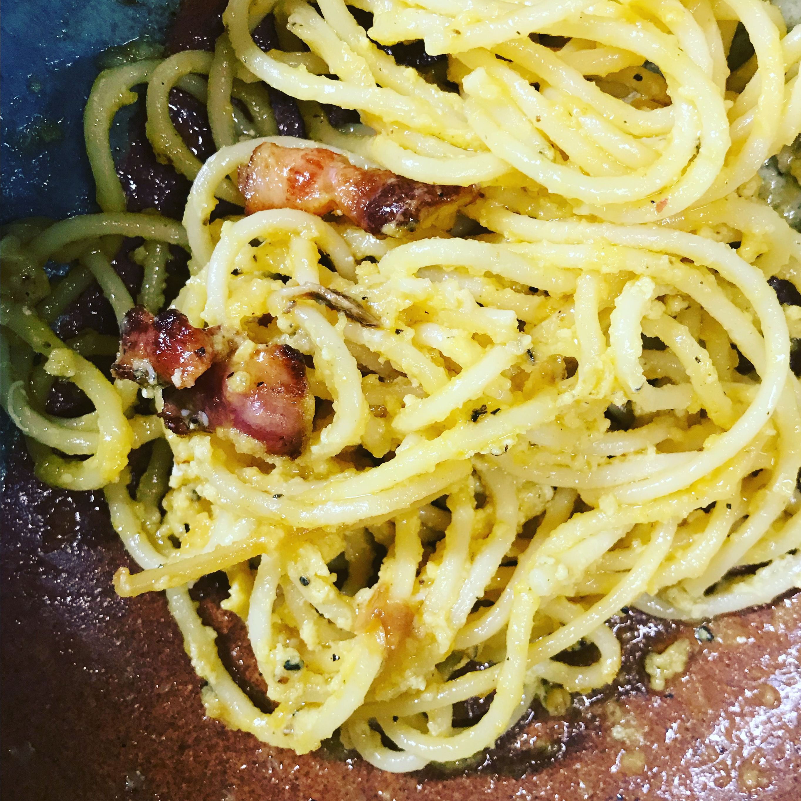

Carbonara

Description
- Bring salted water to a boil. Add 1/2 pound of pasta. Cook until pasta in al dente.
- In skillet, cook 125 grams of chopped bacon pieces until crispy. Once cooked, remove most of the cooked bacon pieces and set aside.
- Make carbonara.